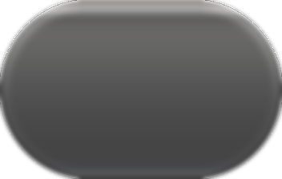
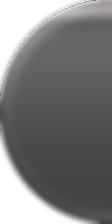
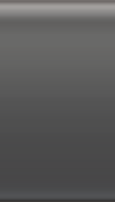
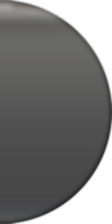

A liquid-glass button that stretches with its label, with real edge refraction.
Hover to see it.
One set of assets: the longer the label, the wider the button — the caps never change.
On light surfaces the glass reads pale — the tint keeps the label legible.
112px caps, one tileable middle, pixel-identical seams.




repeat-x — no distortion at any width
One element does the nine-patch stretch; hover and active swap the filter.
.btn {
display: inline-flex; align-items: center; gap: 9px;
height: 56px; width: auto; /* width comes from the label */
border: 0 solid transparent;
border-left-width: 28px; border-right-width: 28px;
border-image: url(./assets/glass/black-sheet.webp) 0 112 0 112 fill stretch;
border-radius: 980px; color: #fff;
backdrop-filter: url(#glass-1) blur(6px) contrast(1.15) saturate(170%);
}
/* displacement map + filter template: ./assets/glass-filters.svg */
SF Pro Display / SF Pro Text; 17px/1.47 body, letter-spacing -0.022em; 48px/1.08 headings.
56px tall (48px on mobile), 28px insets, 980px radius.
4× lossless WebP (224px tall, shown at 56px), transparency kept.
24px SVG sources, minified with SVGO, rendered at 20px.